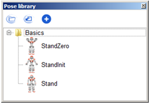

Pose library panel¶
What is the Pose library panel¶
The Pose library panel displays specific Timeline boxes containing NAO preset positions.
It enables you to easily define and access standard key positions for NAO when you create a behavior.
Choregraphe includes by default a Pose library which is automatically opened when you open the Pose library panel. It contains some basic positions you could need to create your first animations.
Using Pose library panel¶
You can use this library to add boxes to your behavior by dragging and dropping a position from the pose library to the flow diagram as you would do with the box library. The resulting box enables you to put NAO directly in this position during your behavior.
Warning
These poses are not like the Stand Up box you can find in the default box library for example. NAO will not calculate the right animation to go to the position safely. He will directly go to the position, whatever the initial position he currently is in. So make sure that your robot can go to it without falling before using a pose.
Clicking on a chosen position will automatically and directly put NAO in the selected position.
Note
A robot first needs to have its joints stiffened to go to any position from the pose library, unless it is a simulated robot without any physics effect (the local NAOqi found in Choregraphe for example). For more information about the abilities of a simulated robot, see the definition of a simulated robot.
Customizing Pose library panel¶
You can add a folder to organize the pose library as you wish by right-clicking anywhere on the Pose library panel and selecting Create Folder.
You can edit the name, the description and the image of a pose by right-clicking on it and selecting Position properties. A new widget will be displayed where you will be able to enter a new name, a new description and/or choose a new image for the position.
You can delete a specific position by right-clicking on it and selecting Delete.
Here are the other actions you can make using the buttons of the toolbar of the Pose library panel:
| Button | Function |
|---|---|
| Open an existing pose library from your computer. | |
| Export all the opened libraries into a single one to your computer. | |

|
Add NAO’s current position to the list of the poses in the Pose library panel. A new widget will be displayed to give a name, a description and an image to your new position. Note You can take a screenshot of the 3D view to illustrate the position. |
Feel free to complete the default pose library with your own positions or to create your own pose library.
You should know that you can also choose to automatically open at Choregraphe startup your own pose libraries. To do so, go to the menu Edit > Preferences. Then choose the pose libraries you want to be opened in the field User’s pose libraries.